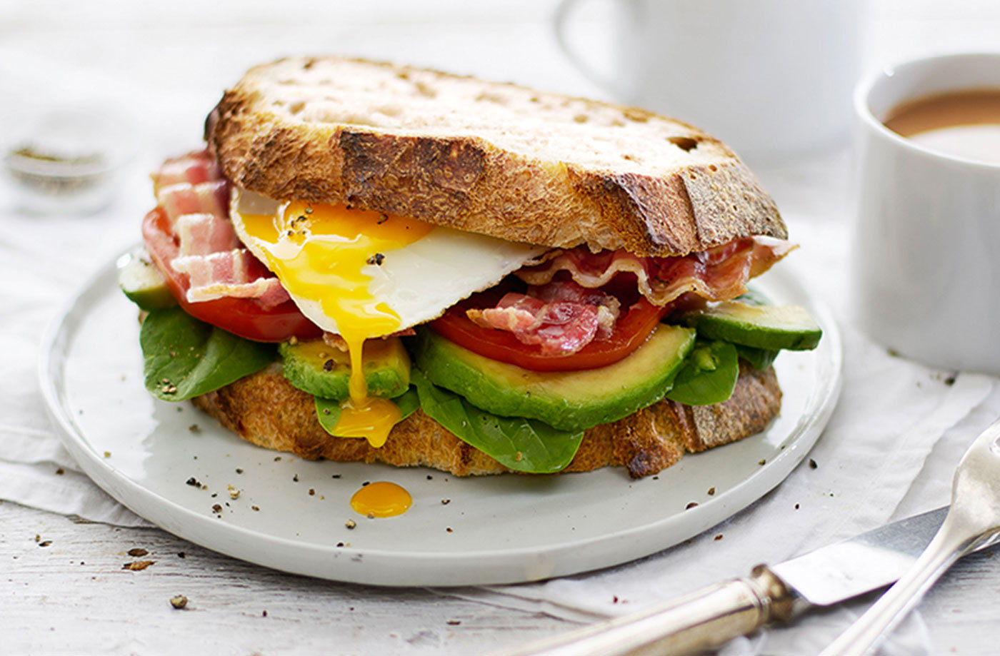

Mitchell Sandwich

A Perfect Sandwich
Sandwiches are so underated. I love a sandwich, there easy, fullfilling
and they can be amazing on their own or with a packet of crisps. This is a
perfect breakfast sandwich with extra flavours to make it even more
delicous. I will share with you my secrets.
Ingredients
- Sourdough Bread
- 1 Avacado
- 1 Large Egg
- 2 rashes of Smoked Bacon
- Garlic Infused Olive Oil
- Chilli flakes
- Salt
- Pepper
- Mature Cheddar Cheese
- Balsamic Glazwe
The How To
- Get that grill on - medium heat
- Spank that bread.
- Then slice that sexy ass bread to however thicc you want it baby
- Get the Bacon in
- Toast your slices (we dont want it to crispy, just slightly taosted so we have a nice soft middle).
- Olive oil in a pan. Crack open the egg. (IMPORTANT - We want the yellow bit runny so dont over cook)
- Once Sourdough is tosted, smosh the avoacdo into once side of it
- Drizzle Garlic Infused Olivi Oil onto the Smoshed Avacado
- Sprinkle Salt, Pepper and Chilli flakes onto the smoshed Avacado
- Add the cooked Egg
- Add the Bacon
- Now add the Cheeeeeeeese. (if your timing is right, the Cheese will melt on the Bacon)
- Drizzle a little amont of the Balsami Glaze onto the inside of the other toasted bit of Sourdough
- Slap it on top. Push down slighty on top of the sandwich to really seal it all in.
- ENJOY!